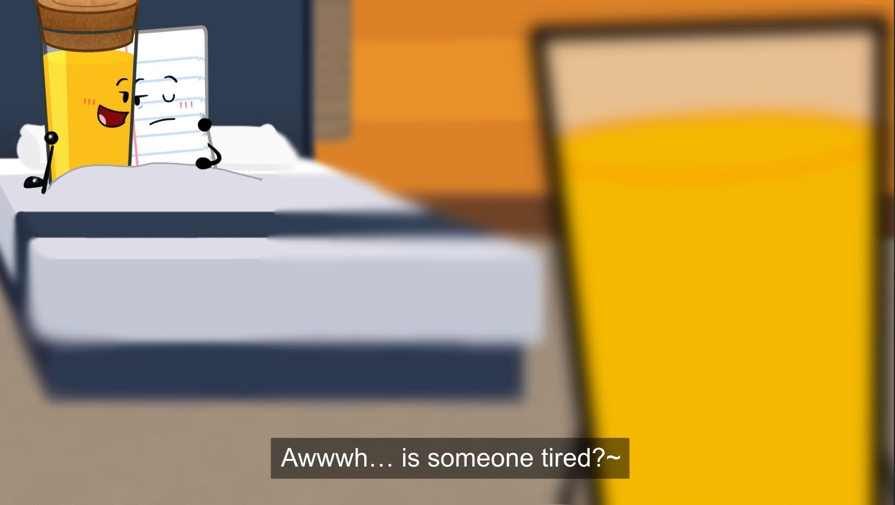
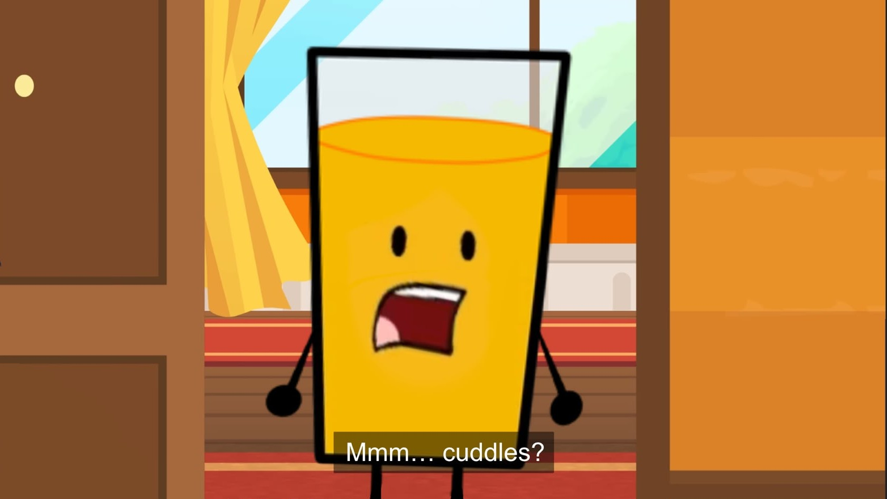

When Marshmallow first proposed the idea of time travel in order to get the old MePhone4 back after MePhone4S shot him, OJ will admit he was more than a bit skeptical of the idea.
It sounded like a good idea in theory, sure, but… time travel just… couldn’t be possible, right?
Even crazier was Marshmallow casually suggesting that the idea of time travelling was as simple as taking your first steps. Even if technology that could do that existed… would Marshmallow really be the first object to get her hands on it?
Though before he even had a chance to protest… Marshmallow hit a button on a strange device she had, and all of a sudden… they were back.
He could see MePhone4, standing there, in the flesh, face to face with MePhone4S. No massive crack, no scratches, no nothing… which must have meant…
“It worked! We’re back to the exact time he was shot! Now quick…”
OJ… didn’t really pay attention to whatever Marshmallow had to say next, glancing around the plain field they’d landed themselves in.
There were small, bright specks of dust littering the sky’s still navy blue colour, but aside from that, most things were still the exact same. He supposed that made sense, since, in theory, they’d only time travelled a single day into the past, after all.
But eventually, his eyes landed back on Marshmallow, who was still explaining the plan.
“…Replace MePhone4 with this dummy, which I got from Walmart!”
“Uhh… wow. Walmart has everything.”
“Yes. Yes it does. Now go OJ!”
She pressed a button on the machine, and the MePhone dummy was shoved into his hands. It was clear what he had to do. And so, he walked over to where MePhone4 was standing and replaced him with the dummy he was given.
He took a look at the bush Marshmallow and Taco were sitting in, both with excited grins plastered onto their faces; their plan would work, after all. Probably….
But that wasn’t his main concern. Not anymore.
Because oh my god.
Marshmallow has a TIME. MACHINE.
Why was she just- keeping that thing around?! It could be SO useful. Imagine the possibilities! He could fix small errors in his past, or even use it to rewrite the future if he ever made a mistake-
Wait.
The future.
He could SEE his future…
Oh, that was an opportunity far too good to pass up.
He walked back over to Marshmallow and Taco, his gaze distant and unfocused. Neither of them seemed to notice, and with a press of a button, they were back in the present.
And naturally, his eyes locked onto the big, shiny red button Marshmallow was holding so carelessly, waving it in the air with a massive grin on her face.
She was so small… and she wouldn’t see it coming. It’d be so easy to just… steal it.
If he wanted to do it, he had to act now. While it was still out in the open, free for the taking.
In one quick swoop, one impulsive decision that could permanently change his outlook on life forever, he snatched it right from under her nose.
He hit it before anyone had the opportunity to realise what he’d just done.
-
The place he ended up when he’d regained his vision was… certainly different to what he was used to.
The world was more… polished? Even things like the grass looked more… real. The hues of emerald and lime green mixed beneath his feet were utterly enchanting, and the blades themselves were so tall, soft and lush… nothing like the spiky, mushy slop he was so used to.
Even the sky was different. Instead of a dull, faded blue, it was a pleasant, crystal gradient dotted with fluffy clouds. It was all… absolutely mesmerising to him.
When… When was he? And why was it so quiet out here?
He decided that he realistically had only one option (aside from returning to his time, of course, but there was no way he was going back now) and that was to explore.
So he walked around for a few minutes, just to see what he could find, or if anything else was different. He was expecting to run into another object eventually; surely life wasn’t extinct or something?
But what he wasn’t expecting… was to see a whole ass building.
That wasn’t even mentioning the fact that the entire thing looked like a massive glass of orange juice. Weirdly enough, there was no name attached to it anywhere, only a couple holes where he assumed a massive sign must’ve once hung. Maybe whoever was in charge was rebranding?
After a few seconds of contemplation, he decided to head inside. What was the worst that could happen? …Well, a lot of things could go wrong. Very quickly. But he didn’t want to think about those possibilities.
And the moment he opened that door, his eyes lit up. It was… wow. A lot. But the first thing that caught his eye wasn’t the striped, neon orange walls, or the lovely velvet carpet - but the sight of so many familiar faces!
Pickle and Bomb were gaming on a couch, he could see Lightbulb eating… something… out of the corner of his eye, and Balloon was chatting with Nickel, Baseball and some… suitcase girl or something.
Of course, there were some unfamiliar ones too, like a bottle of soap scrubbing the walls, or a microphone casually leaning against the couch. But he was sure that if they were hanging out with other people on the show, that they all probably got to know each other well enough over time.
He was starting to get fairly confident that he’d landed himself in the future by now. Everyone would’ve probably told him about a building like this if it’d existed before his time.
After a couple seconds of standing there and trying to make sense of everything, the soap bottle he’d seen earlier began walking over to him.
“OJ? I thought you were upstairs!”
He completely froze, staring right at the girl for a few seconds. Oh shit. He’d never seen this person in his life, but clearly the OJ of this time had…
He bit his lip, eyes darting around the room for some sort of excuse, before the girl suddenly provided him with one.
“Wait… you don’t… look quite like OJ. Are you OJ?”
He breathed out a silent sigh of relief, shaking his head.
“Uhhh… no. I’m… Carrot… Juice. Yeah.”
“Hmm…”
She raised a hand to her chin, studying him for a while, before letting out an approving hum as she shrugged.
“That checks out! Normally, OJ would book a room for you, but he’s sorta busy right now. You can just… hang around here until he’s free, I guess.”
OJ… his future self…
He’d be lying if he said he wasn’t at least a little curious to see what he’d gotten up to… with the way this girl referred to him, it sounded almost like he had a position of power here. She said he was upstairs, right?
“Sounds like a plan… uhm…”
“Soap! I’m Soap! Nice to meet you, CJ.”
OJ flashed her a smile, reaching a hand out for a handshake, which she gladly took.
“Alright, well, I’ve gotta get back to cleaning! See ya around!”
And just like that, she was gone. He’d been left completely to his own devices to investigate the building.
Immediately, he tiptoed towards the stairs. He wasn’t gonna waste a second when he had the potential of finding out what his future self was like.
At the top of the staircase, he found a ton of rooms. Like a lot. So this was probably… some sort of hotel? Did everyone live here?
He walked by a few doors, but his curiosity was starting to get the better of him. What were they like? Who lived in them, and what were they doing?
God, imagine if he found the one he was in - he could talk to his future self!
He made that his goal, opening every door which had its light on and was unlocked. He didn’t even bother with knocking, just checking every possible door he could.
What he found was… certainly interesting.
A tissue box and a trophy hanging out together, a candle and a silver spoon doing breathing exercises, even just a box, sitting on their bed, all alone…
There was a good blend of familiar and unfamiliar faces. When he found the door for Salt and Pepper’s room, he shut it in a heartbeat.
And then- he found it.
It was one of the last ones he had yet to check, but… there he was.
A glass of orange juice. Him.
He was so focused on the fact he’d found his future self that it took him a few minutes to register… what else was happening in the room.
He had a cork in his glass, and a laptop on his lap, presumably watching some sort of show.
But that wasn’t the most interesting part. No, it didn’t even come close.
What was the most interesting part.. was what was next to him.
Or rather… who was next to him.
Because he immediately recognised that object.
Paper.
Just… sitting in bed with him, pressed so firmly against his side he could’ve sworn his page had started to wrinkle. His arms were around his future self’s glass, holding him close, and his future self was doing the same.
And to top it all off… They both wore matching rings on their fingers. Even standing as far away as he was, OJ could spot their silver glisten, so bright and beautiful it was practically taunting him.
He couldn’t even hear what was playing on the laptop. He was far more concerned with what he was seeing.
What. The HELL?!
Was he… was he married to PAPER?! Or at least engaged to him?
Ohhhh he had so many questions…
First and foremost, was he seriously gay? It was something that’d never crossed his mind. None of the girls on the show seemed all that appealing, but he never would’ve imagined that it was because of… of this. He just always assumed he’d be single forever.
It… simultaneously explained a lot, and confused him even more.
He felt like he was looking at some edited clip or something… there was no way this could be real.
But something even more strange to him was… why Paper? Wasn’t he the weak wimpy guy who got eliminated first for not doing the challenge? How would he possibly fall for a guy like that?
Sure, maybe they got to know each other outside the competition or something… but it just seemed so weird. He was probably the last guy on the show he’d ever see himself dating. In fact, he’d basically forgotten that Paper even was on the show.
Was his future self’s taste just… really that bad? He barely even knew Paper! Maybe this guy cast some sort of spell on him… that had to be it, surely.
Actually, how far into the future was he? It just occurred to him right then and there that he had absolutely no clue.
He spent a few more seconds staring at the… couple… because he simply couldn’t help it. What was he seeing? He couldn’t tell if he felt more disgusted, shocked or confused. Maybe a mixture of all three.
Paper had somehow shuffled even closer to future him on the bed, letting out a quiet yawn as his grip on the glass tightened. That was something his future self seemed to notice, his eyes flicking to Paper, a small smile spreading across his face as he gently caressed the side of his page.
“Awwwh… is someone tired?~”
He shut the laptop, placing it on the nightstand and shifting so he was fully facing Paper, who let out another yawn as he nodded.
“Mmm… cuddles?”
The question was so simple, but future OJ nodded at the idea without hesitation, bringing the two deeper into their bed and letting the sheet of paper wrap perfectly around his glass.
“Mhm, I don’t see why not. We have the whole day to ourselves, don’t we? Soap and Pickle can take care of whatever…”
“Hmm.. that’s true.”
The room was engulfed in silence. But not the uncomfortable silence that came with having to sleep outside on the show without a cork brought him. It was a warm kind of silence, comfortable and conveying a thousand thoughts and feelings of comfort without a single word.
Even past OJ could feel it… and it brought him an aching sense of… longing?
“You know, ‘Jay… I… I really love you.”
“Hmm… I love you too, hon. You’re my everything, and you always will be. Never forget that, okay? My sweet, thoughtful, adorable paper angel…”
“Ohh, stop it you…”
“Mm… never~”
They let out a few happy, tender chuckles, nuzzling into each other and falling deeper into their embrace.
OJ… OJ couldn’t help but admire them.
Maybe it was just knowing that this was his future, but… something about seeing himself curled up in Paper’s arms, content and completely at peace…
He… he wanted that. He needed that.
Nevermind all those thoughts he was having earlier… they’d all completely left his mind by now…
Because he’d never really taken a moment to actually… think about Paper in a different light. After all, he had no reason to.
But damnit… his future self was completely right, he looked adorable… all cutesy and giggly, happily snuggled under the covers with him…
God- god he really was gay.
He’d have to live out the rest of his life knowing at some point… he didn’t know where or when… he’d fall in love with a male sheet of paper, so deeply that he’d apparently agreed to the commitment of spending the rest of his life with him.
And honestly? He didn’t even mind. He was… looking forward to it, even
He shut the door to their room again, breathing out a deep sigh.
“What was that?”
He stiffened up at the sound of Paper’s tired, groggy voice, pulling out the button and preparing himself to press it. His finger was practically hovering over the button when he heard his future self’s response.
“What- oh- OH. It’s- it’s probably nothing! Might be Yin-Yang acting up again…”
He stumbled over his words, and it was clear that he sounded… panicked?
Wait- did he know?
…Of course he knew. What a stupid question. That OJ probably remembered all of this…
Thankfully, Paper was tired enough to buy that… honestly awful excuse.
“Hmm… okay. We’ll deal with it in the morning.”
“Yeah… yeah. I’ll… go lock the door.”
He heard his future self shuffle out of bed, walk over to the door, and lock it without a second thought.
Huh.
That was… probably his cue to leave.
There was so much from this time he still didn’t know, but… he felt like he’d learnt more than enough already.
He took a deep breath, pulling out the button and pressing it once again.
-
“And because it’s the season of giving, as a reward for winning the challenge, Team Chicken Leg can choose an eliminated contestant to join their team.”
That was when OJ saw it.
Saw him.
Suddenly, everything made so much more sense…
A list of all the eliminated contestants flashed on MePhone4’s screen, with the first being… Paper, of course.
Who could’ve guessed the very next challenge after he went to the future was one where an eliminated contestant was going to come back? Was it all just a coincidence, or did fate orchestrate this sequence of events for him?
Paper. God, he hadn’t stopped thinking about him since he visited the future. He saw it all so clearly now… even just as a few pixels on some phone’s screen he looked… incredible.
“Pepper!”
Salt’s cheer snapped him out of his daze, and he was quick to protest. No, Salt had already met her best friend. He knew basically nothing about his future husband. He deserved this chance.
“No. I think Paper was a good person. He should join.”
“No!”
“Pepper!”
“Wow, you guys are undecided. I guess I’ll let the viewers vote. Go on viewers…”
That was when it all faded away for OJ. Because he’d literally been to the future… he knew what the likely outcome of this vote would be.
Paper will rejoin. He had to. And then… then he’d be able to get to know the man who would one day become the love of his life… spend time with him, do challenges with him… just- grow closer to him in general… until the future he’d seen that day was his.
He couldn’t wait.

